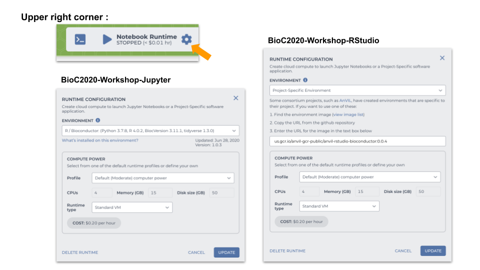

Demo Workspace
We will use one of the notebook, 1_Annotate_Manifest, from Tumor_Only_CNV workspace for our live demo. You will clone this workspace and start your own notebook in playground mode.
- Go to https://app.terra.bio/#workspaces/waldronlab-terra/Tumor_Only_CNV
- Clone this workspace. Use the Billing project, “bioc2020-workshop-jupyter”

- From your cloned workspace, go NOTEBOOKS tab
- Open the notebook, 1_Annotate_Manifest
- Start your notebook in playground mode

Different runtime configurations
You can decided the runtime environement of your workspace at the project level. Below are two example workspaces with different runtime enviornment

1. BioC2020-Workshop-RStudio
Jupyter Environment R/Bioconductor: (Python 3.7.8, R4.0.2, BiocVersion 3.11.1, tidyverse 1.3.0)
2. BioC2020-Workshop-Jupyter
Other Environments -> Project-Specific Environment -> us.gcr.io/anvil-gcr-public/anvil-rstudio-bioconductor:0.0.4
If you want to change the runtime environment of your project: 